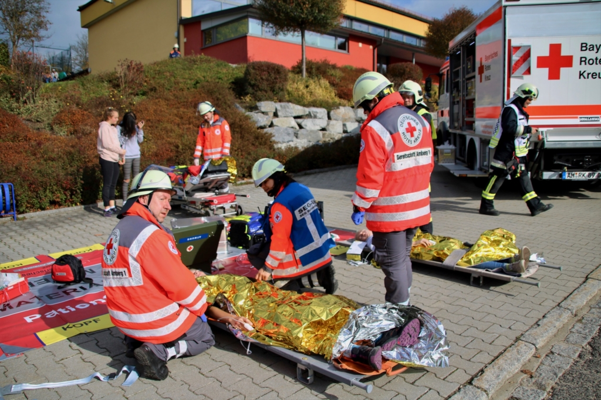

Die SEG Ausbildung umfasst insgesamt drei Teile:
Der erste Teil besteht aus der theoretischen Vermittlung des nötigen Wissens. Unter anderem muss die rechtliche Grundlage und
das Verhalten bei der Alamierung und auf dem Weg zur Wache besprochen werden.
Dabei ist es wichtig, sich nach der Alamierung zum einen zügig
auf den Weg zur Wache zu machen, zum anderen darf dabei niemand gefährdet werden und es müssen alle gelten Verkehrsregeln beachtet werden.
Außerdem muss die Verteilung der Aufgaben und das Aufbauen des Patientenablageplatzes theoretisch durchgesprochen werden.
Die SEG Behandlung ist dafür zuständig einen Patientenablageplatz und einen Behandlungsplatz einzurichten.
Der Ablageplatz (vgl. Bild) ist vor dem Zelt gelegen und dazu, dass andere Hilfskräfte, wie z.B. Feuerwehren, die Verletzen dort hinbringen und
ablegen können. Dann werden die Verletzen von einem extra geschulten Personal beurteilt, wie schwer die Verletzung ist. Danach werden die
Patienten zum Behandlungsplatz gebraucht. Dieser ist überlicherweise im Zelt zu finden. Dort werden Verletzungen so wie möglich behandelt und die Patienten
auf den Transport ins Klinikum vorbereitet und dann der SEG Transport übergeben.
Im zweiten Teil der Aubildung soll dann das Gelernte in der Praxis umgesetzt werden. Ein Patientenablageplatz, das Zelt mit Behandlungsplatz, sowie Strom und Heizung müssen aufgebaut werden. Der letzte Teil ist dazu gedacht, die Helfer in einer möglichst realen Situation zu testen. Dazu wird alle paar Jahre eine große Einsatzübung angesetzt, inder sowohl das BRK als auch Feuerwehren, THW oder Wasserwacht dabei sind.
